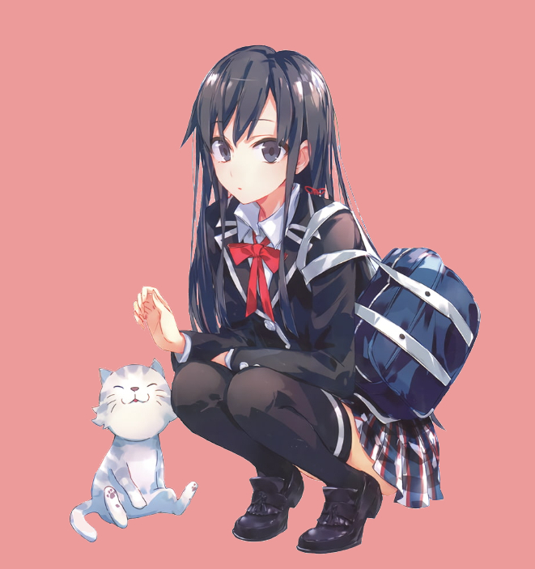
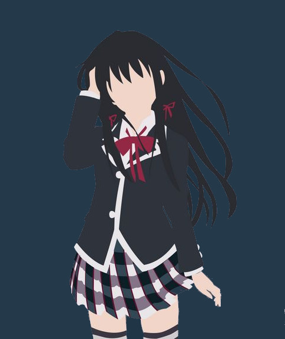
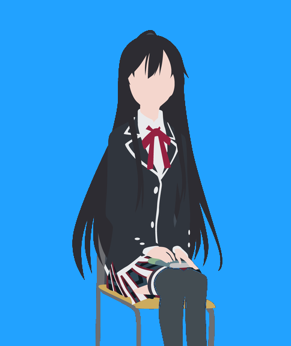
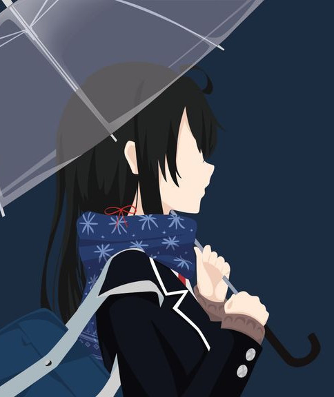
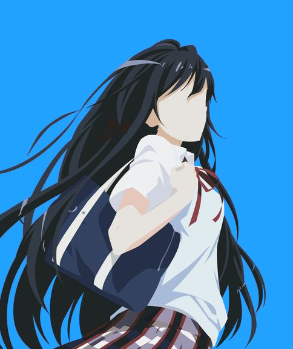

Hello, Kanojo no Namae
Yukino Yukinoshita
And, She's Neko Lover
Kanojo Personality

Kanojo is Yukino and she's Neko suki desu
Yukino is a smart and beautiful individual who comes from a rich family, but has a tendency to be outspoken and often points out the mistakes of others without covering up those mistakes. She also has a very cold and unfriendly demeanor that Hachiman calls her the "Ice Queen". His personality can be considered very arrogant to some people, including Hachiman.
Despite all that, Yukino seems to be a fan of Pan-san, the panda character. He even has the original script of the story and his toy doll, which Hachiman finds surprising. She also loves cats and anything cat-related.
More InfoKanojo Appearance

Hair
Yukino is a very beautiful teenage girl with waist-length black hair tied with two red ribbons on each shoulder.

Uniform
Yukino can be seen mostly in his school uniform, which consists of a black blazer with a white shirt underneath, a red ribbon tie, a plaid skirt and black stockings up to the knees.

Winter
Yukino is also sometimes seen in a blue scarf in winter.

Flat
Even though she looks flat chested compared to most female characters, she is still considered quite attractive.
Kanojo Ability
Yukinoshita Yukino Ability & Skills
Yukino is good at academic and extracurricular activities. Volume 4 mentions that he stands first in all subjects in the entire school. He secured first place in Japanese, followed by Hayama in second place and Hachiman in third place.
Yukino's athletic ability was showcased in Episode 13, however Yukino is not confident in his stamina (see episode 3 of anime). Yukino also shows good leadership as seen when he managed to handle the festival committee in place of Sagami. But in the end he dropped because he handled all of that alone.
Apart from that he is also good at cooking and able to teach others how to cook, as shown in episode 1 and in episode 12 of season 2. Yukino also makes paella in the OVA. In Episode 12 (adaptation of Volume 6), Yukino is shown playing bass guitar and singing.
More InfoAcademic
Athletics
leadership
Cooking
Musical skill
Kanojo Quotes
I think it's important to challenge yourself. It helps make you a better person.
Yukino to Hachiman
Nya ~ Nya ~ Nya ~ Nya ~
Yukino to Kamakura
People who don't work hard don't have the right to be envious of the people with talent. People fail because they don't understand the hard work necessary to be successful.
Yukino to Yui
Sha ~ Sha ~
Yukino to Shark
All humans live with problems and endure pain.
Yukinoshita Yukino
Please give me your life